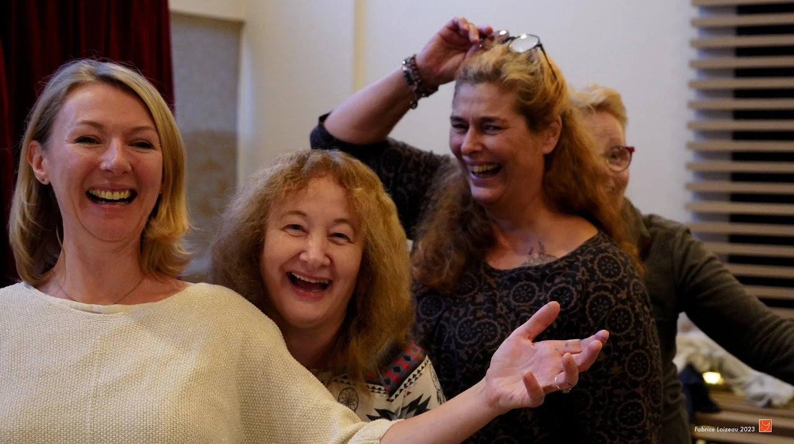
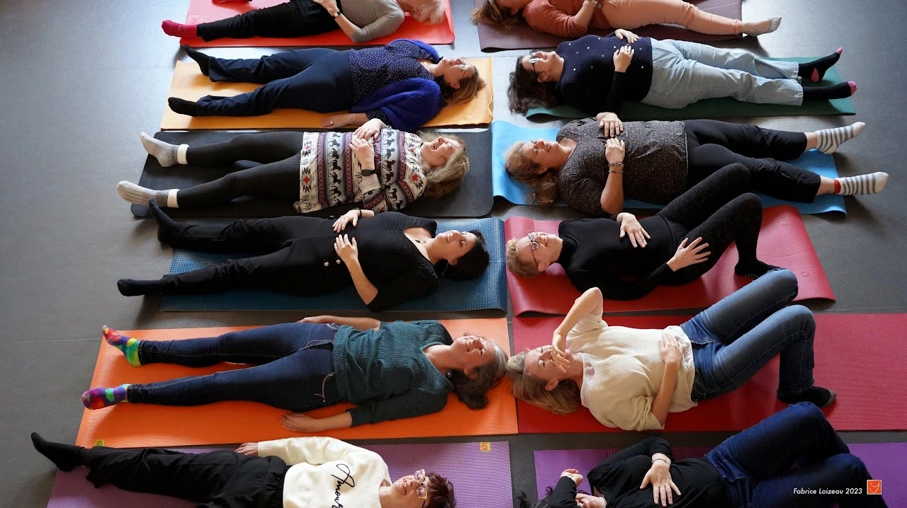
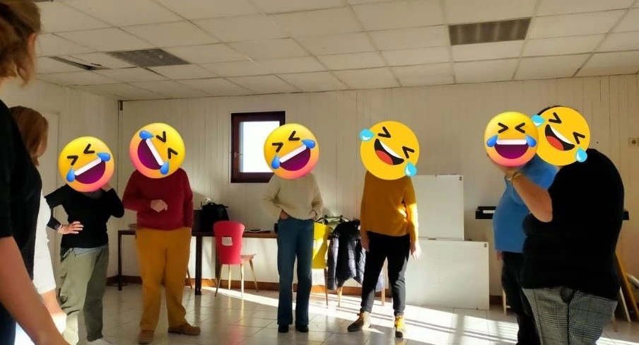

Qu'est ce que le Yoga du Rire?
C'est une pratique très simple, qui permet à tous de faire l'expérience du rire sans
raison, car elle n'est pas basée sur l'humour. Le rire, pratiqué comme un exercice,
se propage très vite parmi les participants et installe énergie et bonne
humeur.
Outre ses bienfaits sur le moral, le rire, pratiqué régulièrement est un excellent
exercice pour le corps et le système cardio-vasculaire.
Santé, vitalité et immunité
Le rire a des effets comparables à l'exercice sur le système cardiovasculaire. Il stabilise le rythme cardiaque et diminue la pression artérielle. Rire a un effet bénéfique sur notre sommeil, notre digestion, notre énergie. Il améliore l'oxygénation du sang. En augmentant la production de globules blancs, il renforce notre système immunitaire et permet de mieux résister aux maladies cardiovasculaires, aux migraines mais aussi aux dépressions et insomnies.

Positive attitude et confiance en soi
Le rire est un exercice efficace qui détruit simultanément le stress physique, mental et émotionnel. Les bénéfices de la pratique se font rapidement ressentir, notamment en améliorant le lâcher-prise, et en favorisant l'optimisme. Les personnes pratiquant le yoga du rire adoptent une attitude sereine et joyeuse dans leur quotidien et savent mieux faire face aux aléas de la vie. Pratiquer le rire en groupe permet d'avoir une plus grande facilité à communiquer avec les autres, renforce la confiance et soi.

Comment se déroule une séance de Yoga du Rire?
Un éveil du corps avec des mouvements très simples et des respirations pour se préparer en douceur à rire. Une série d'exercices de rire tous en ensemble. D'abord "forcé", le rire devient vite contagieux au fil des exercices. Après les exercices en groupe, une partie allongée ou assise. Dans un premier temps, de vrais rires vont généralement éclater et se propager dans un moment de lâcher prise absolu, suivi par une petite relaxation guidée.

Une pratique conçue par un médecin
C'est un docteur en médecine, le Dr Madan Kataria, qui inventa le yoga du rire en 1995 en Inde et lança le premier club de rire dans un parc public à Mumbai. Aujourd'hui, on recense des milliers de clubs de Yoga du rire dans plus de 115 pays.

Allez, j'essaye!

Pour se faire une idée, le mieux est de faire l'expérience d'une séance. J'anime chaque semaine à La Roche sur Foron. J'interviens également ponctuellement dans d'autres communes en Haute-Savoie.